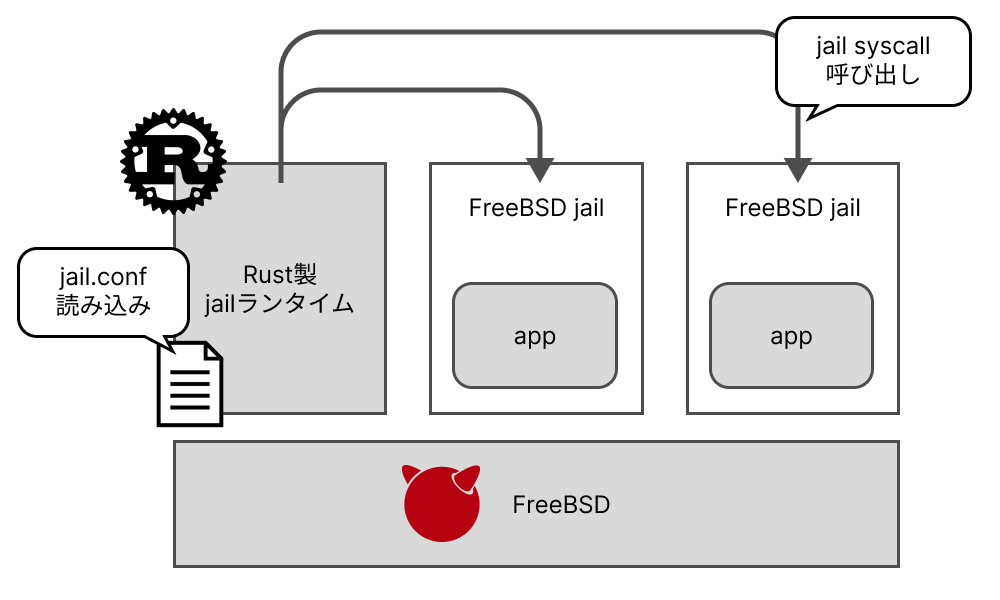

キーワード： Rust / FreeBSD / コンテナランタイム
Rustの学習を兼ねたFreeBSD jailランタイムを実装した。Rustはそのメモリ安全性やスレッド安全性などからシステムプラグラミングのための言語として流行っていることから、コードを実際に書くことで学習をしようと考えた。現在実装中であり、コンテナランタイムに必要となる機能を追加している。
背景
- Rustはメモリ安全性やスレッド安全性などからシステムプログラミングのための言語として台頭
-
コードを実際に書くことで、Rustの良さを学習
- 今回はFreeBSD上で利用可能なjailランタイムを作成
- 実装がうまく行けば、研究にも利用可能と想定
実装
- アプリケーションや設定ファイルを受け取るためのコマンド・オプション作成機構（clap crate）
- 設定ファイルを読み取る機構
- コンテナ内アプリケーションを動作させるためのスレッドの利用
- jailシステムコールを呼び出す機構（libc crate）
頑張った点
- Rustを学習するために実際に手を動かすことができた
- スレッド作成やシステムコール呼び出しの簡単さを理解することができた
URL
Rust-run-jail (GitHub)：https://github.com/SoumaSakaguchi/rust-run-jail